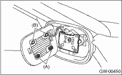

GLASS/WINDOWS/MIRRORS > Outer Mirror
1. Face the mirror upward.
2. Use a flat tip screwdriver to remove clip (A).
3. Lift the lower mirror up to remove hooks (B).
4. Disconnect the mirror heater connector from side of the mirror. (Model with mirror heater)
5. Catch the hooks (B) and install clips (A).

CAUTION:
• When removing the mirror, be careful not to damage the back surface of mirror with a flat tip screwdriver.
• When installing the mirror, insert the hook and clip securely.